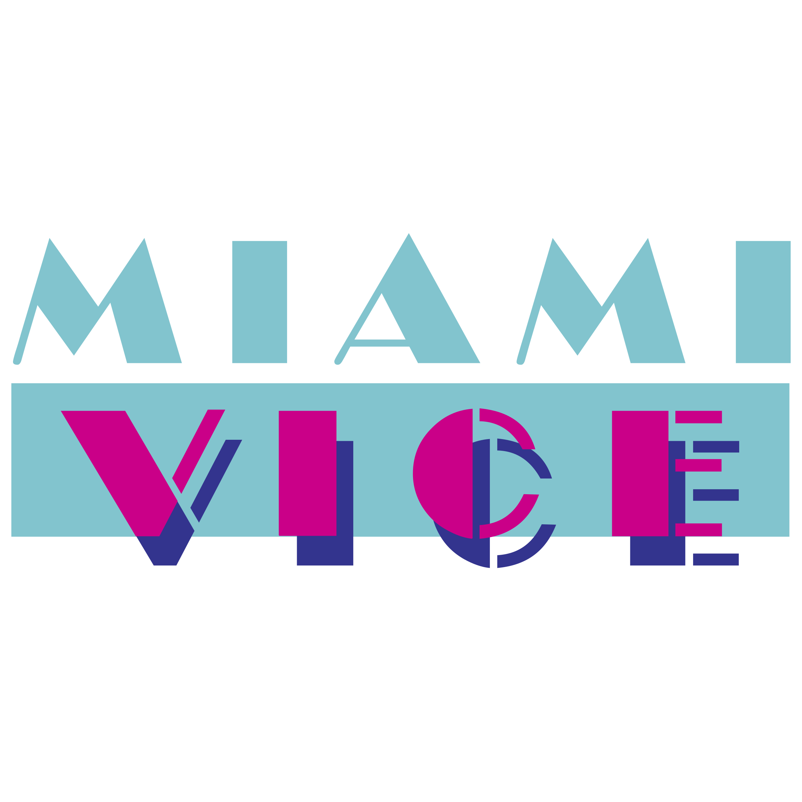

|  | MIAMI VICE |
|||
|---|---|---|---|---|
MENUHOME OVERVIEW LOCATIONS MUSIC CARS FASHION GALLERY CONTACTS |
OverviewScripts were loosely based on actual crimes that occurred in Miami over the years. This included both local and international and global organized crime. Many episodes focused on drug trafficking (for which real-life Miami was a main hub and entrance point into North America in the early 1980s). Other episodes were based on crimes such as firearms trafficking, for which Miami was equally a gateway for sales to Latin America, as well as the Miami River Cops scandal (a real police corruption ring that involved narcotic thefts, drug dealing and murders), street prostitution, serial home burglaries, crimes committed by Cuban immigrants to Miami following the Mariel boatlift, and Yakuza and Mafia activity in Miami. The series also took a look at political issues such as the Northern Ireland conflict, the drug war in South America (e.g. "Prodigal Son"), U.S. support of generals and dictators in Southeast Asia and South America, and the aftermath of the Vietnam War. Social issues like child abuse, homophobia, and the AIDS crisis were also covered. Personal issues also arose: Crockett separated from his wife Caroline (Belinda Montgomery) in the pilot and divorced in the fourth episode, and later his second wife Caitlin Davies (Sheena Easton) was killed by one of his enemies. In the three episodes "Mirror Image", "Hostile Takeover", and "Redemption in Blood", a concussion caused by an explosion caused Crockett to believe he was his undercover alter ego Sonny Burnett, a drug dealer. Tubbs had a running, partly personal vendetta with the Calderone family, a member of which ordered the death of his brother Rafael, a New York City police detective. Lieutenant Martin Castillo is also frequently haunted by his past in Southeast Asia, which he had spent as a DEA agent in the Golden Triangle. In the first seasons the tone was lighter, especially when comical characters such as police informants Noogie Lamont (Charlie Barnett) and Izzy Moreno (Martin Ferrero) appeared. Later the content was darker and cynical, with Crockett and Tubbs fighting corruption, and storylines emphasizing the aspect of human tragedy behind a crime. The darker episodes sometimes lacked a denouement, each episode ending abruptly after a climax involving violence and death, often giving the episodes a despairing and sometimes nihilistic feel, despite the trademark glamour and conspicuous wealth. Given its idiosyncratic "dark" feel and touch, Miami Vice is frequently cited as an example of made-for-TV neo-noir. Michael Mann, who serves as executive producer for the majority of the show's five-year run, is often credited with being one of the most influential neo-noir directors. The second-season episode "Out Where the Buses Don't Run" ranks #90 on TV Guide's 100 Greatest Episodes of All Time list. | |||
by Bosiy E. 2023 |
||||